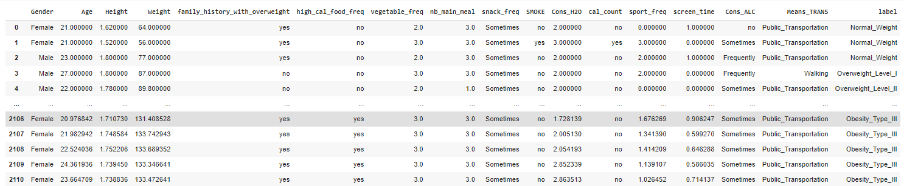

Data Exploration
First,we were not really familiar with the spanish language so we changed the column's name to be avoid going back to the dataset
documentation every 3 seconds
Here is a view of the modified tab, modified columns' name to be more specific 😉

Then we checked the presence of duplicated rows and missing values
Data Visualisation